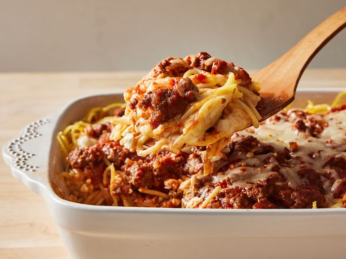

Baked Spagehtti

Oven Baked Spaghetti
Comforting baked spaghetti recipe with plenty of melted cheese — the
perfect dish for potlucks, family gatherings, or a weeknight dinner.
Ingredients
- Spaghetti Noodles
- Beef
- Meatless Spaghetti Sauce
- Salt
- Eggs
- Cheese
- Butter
Steps
- Boil and drain the spaghetti.
- Cook the beef and onion together, then drain off the excess oil.
-
Add the sauce and salt. Whisk the eggs, Parmesan, and butter in a
separate bowl.
- Toss the spaghetti in the Parmesan mixture.
-
Layer the ingredients in a prepared baking dish according to the
detailed recipe.
-
Cover and bake for 40 minutes. Sprinkle with mozzarella, then keep
baking until the cheese is melted.